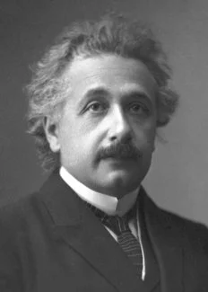

Albert Einstein
_______________________________________________ Biography ______________________________________________________
Albert Einstein was born at Ulm, in Württemberg, Germany, on March 14, 1879. Six weeks later the family moved to Munich, where he later on began his schooling at the Luitpold Gymnasium. Later, they moved to Italy and Albert continued his education at Aarau, Switzerland and in 1896 he entered the Swiss Federal Polytechnic School in Zurich to be trained as a teacher in physics and mathematics. In 1901, the year he gained his diploma, he acquired Swiss citizenship and, as he was unable to find a teaching post, he accepted a position as technical assistant in the Swiss Patent Office. In 1905 he obtained his doctor’s degree.
He is best known for developing the theory of relativity, which revolutionized our understanding of space and time, and for his famous equation, E=mc², which expresses the relationship between mass and energy.In 1905, he published a series of papers that revolutionized the field of physics, including his special theory of relativity, which challenged the long-held belief in absolute space and time.He also proposed that the speed of light is constant, regardless of the observer’s motion. This theory fundamentally changed our understanding of the universe and paved the way for many subsequent discoveries in physics.In 1915, Einstein published his theory of general relativity, which extended his earlier work to include the effects of gravity. This theory showed that gravity is not a force that acts at a distance, as had been previously believed, but is instead a curvature of space and time caused by the presence of massive objects. General relativity has been confirmed by numerous experiments and is one of the pillars of modern physics.
Einstein also made important contributions to the development of quantum mechanics, a field of physics that describes the behavior of matter and energy at the atomic and subatomic levels. Although he was initially skeptical of quantum mechanics, he eventually came to accept its principles and worked to reconcile them with his own theories of relativity.In addition
to his work in physics, Einstein was also an advocate for peace and social justice. He spoke out
against war and advocated for disarmament and was a supporter of civil rights and democratic
government.During World War II, Einstein immigrated to the United States and worked on the
Manhattan Project, which developed the first atomic bomb.
He died on 18 April 1955, in
Plainsboro, New Jersey, United States.
Awards and Legacy
He received the Nobel Prize in Physics in 1921 for his services to Theoretical Physics, and
especially for his discovery of the law of the photoelectric effect.Einstein received the
Max Planck medal from the German Physical Society in 1929
His work on relativity and
photo-electricity earned him the Franklin Institute's Franklin Medal in 1936. on 14 March 2003,
Google celebrated Albert Einstein’s 124th Birthday with a doodle.